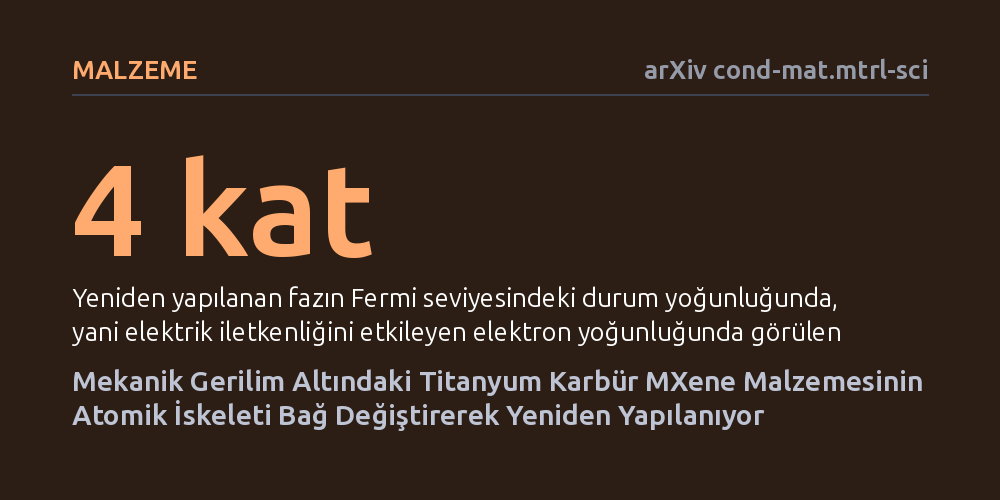

MALZEME · arXiv cond-mat.mtrl-sci · 2026-10-10
Araştırmacı, iki boyutlu titanyum karbür MXene malzemesinin sabit kabul edilen atomik iskeletinin mekanik gerilim altında değişip değişmeyeceğini hesaplamalı yöntemlerle inceledi. Sonuçlar, çift eksenli çekme ve basınç altında malzemenin bağ değiştirerek yeniden yapılanabildiğini ve manyetikliğini kaybedip iletkenliğini artıran yeni kararlı fazlara dönüştüğünü gösterdi.
İki boyutlu MXene malzemelerinin metal-karbon iskeletinin değişmez olduğu kabulünü yıkarak, bu malzemelerin özelliklerinin mekanik kuvvetle atomik düzeyde baştan programlanabileceğini gösteriyor.

Grafenin keşfinden bu yana iki boyutlu malzemeler, yani yalnızca birkaç atom kalınlığındaki katmanlar, malzeme biliminde büyük bir heyecan yaratıyor. Bu ailenin önemli üyelerinden biri olan MXene'ler, titanyum gibi geçiş metalleri ile karbon atomlarının bir araya gelmesiyle oluşan katmanlı yapılardır. Bugüne kadar bilim dünyasında bu malzemelerin özelliklerinin sadece yüzeylerine eklenen kimyasal gruplarla veya katman aralarına sokulan iyonlarla değiştirilebileceği; malzemenin omurgasını oluşturan metal-karbon iskeletinin ise sabit ve esnemez bir kafes olduğu varsayılıyordu.
Ortadaki temel soru tam olarak burada beliriyor: İki boyutlu bir malzemenin iç iskeleti, dışarıdan uygulanan mekanik bir zorlamayla bağlarını koparıp tamamen farklı bir düzene geçebilir mi? Eğer bu iskelet esnetilip yeniden dizilebilirse, malzemenin elektrik iletiminden manyetik davranışına kadar tüm kimliği kökten değişebilir. Bu olasılık, malzemeleri sadece kimyasal kaplamalarla değil, bizzat atomik mimarisini mekanik olarak bükerek amaca özel şekillendirmenin yolunu açabileceği için büyük önem taşıyor.
Araştırmacı bu sorunun yanıtını bulmak için laboratuvarda kimyasal sentez yapmak yerine, bilgisayar destekli kuantum mekaniksel simülasyonlara başvurdu. Çalışmada yüzeyinde herhangi bir yabancı molekül bulunmayan çıplak tek katmanlı titanyum karbür (Ti3C2) kristali temel alındı. Malzeme iki eksen boyunca çekilerek gerilime maruz bırakıldı ve atomların herhangi bir kısıtlama olmaksızın kendi enerjilerini en aza indirecek konumlara yerleşmesine, yani yapısal gevşemeye izin verildi.
Hesaplamalarda atomlar arasındaki bağların nasıl koptuğu ve yeniden kurulduğu adım adım incelendi. Sistemin bir halden diğerine geçerken aşması gereken enerji tepeleri (aktivasyon bariyerleri) ile elektronların atomlar arasındaki dağılımı kuantum kurallarına dayalı analizlerle haritalandı. Böylece, malzemenin dış kuvvet altında parçalanmadan yeni ve dengeli bir kristal düzen bulup bulamayacağı teorik olarak ortaya kondu.
Simülasyon sonuçları, malzemenin iç iskeletinin gerçekten de yeniden yapılandığını gösterdi. Çift eksenli gerilim altında titanyum ve karbon atomları arasındaki bağlar kırılarak yeniden bağlandı ve 'N' adı verilen 15 atomlu yeni bir kristal fazı ortaya çıktı. Bu yeni fazda titanyum atomları birbirine 2,55 angstrem mesafede çiftler oluştururken, altı farklı titanyum-karbon bağ sınıfı meydana geldi. Dönüşüm doğrudan tek bir sıçramayla değil, 'N prime' adında ve ana yapıdan biraz daha düşük enerjili bir ara duraktan geçerek gerçekleşti.
Bu atomik yeniden yapılanma malzemenin fiziksel özelliklerini kökten değiştirdi. Orijinal yapıda var olan manyetik düzen tamamen kayboldu ve malzeme manyetik olmayan bir metale dönüştü. Aynı zamanda, elektriksel iletkenlikle doğrudan ilişkili olan Fermi seviyesindeki elektron yoğunluğu yaklaşık dört kat arttı. Analizler, titanyum atomlarının birbirine yaklaşmasıyla birlikte karbondan titanyuma doğru belirgin bir elektron yükü aktarımı gerçekleştiğini gösterdi. Çok katmanlı yapılarda ise bu dönüşüm katmanlar arasında yeni titanyum-karbon bağlarının kurulmasını sağladı.
Elde edilen sonuçlar, MXene malzemelerinde bağ değiştiren yeniden yapılanmanın mekanik olarak kontrol edilebilecek yeni bir yapısal serbestlik derecesi sunduğunu ortaya koyuyor. Yüzde 10'luk bir çekme gerilimi yeni faz ile orijinal faz arasındaki enerji farkını yarı yarıya azaltırken, yaklaşık 85 gigapaskal gibi aşırı yüksek bir basınç uygulandığında yeni faz temel kararlı duruma geçiyor. Bu durum, malzemenin mekanik baskı altında elektronik özelliklerini değiştirebilen akıllı sensörlerde veya anahtarlama sistemlerinde teorik olarak kullanılabileceğini gösteriyor.
Bununla birlikte, bu bulguların hayata geçebilmesi için önünde ciddi engeller bulunuyor. Dönüşüm yolunda aşılması gereken 8,47 elektronvolt gibi oldukça yüksek bir enerji bariyeri bulunuyor; yani bu yeni faza geçebilmek için sisteme önemli miktarda enerji verilmesi şart. Ayrıca gerçek dünyadaki MXene'ler hiçbir zaman simülasyondaki gibi çıplak kalmıyor; yüzeyleri kaçınılmaz olarak oksijen veya flor gibi kimyasal gruplarla kaplanıyor. Dolayısıyla bu kuramsal tahminlerin gerçek bir laboratuvar deneyinde üretilip üretilemeyeceği henüz belirsizliğini koruyor.